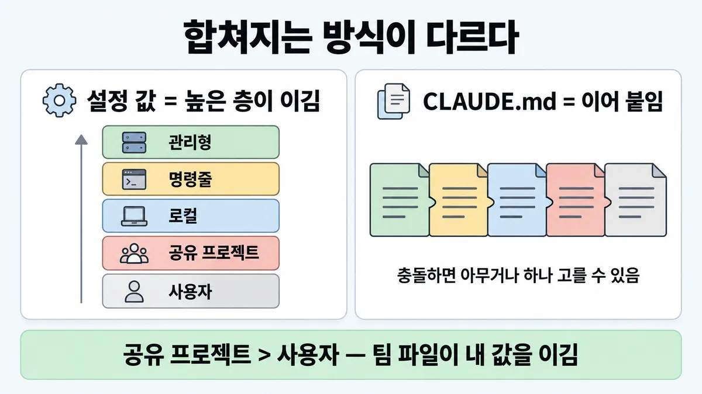
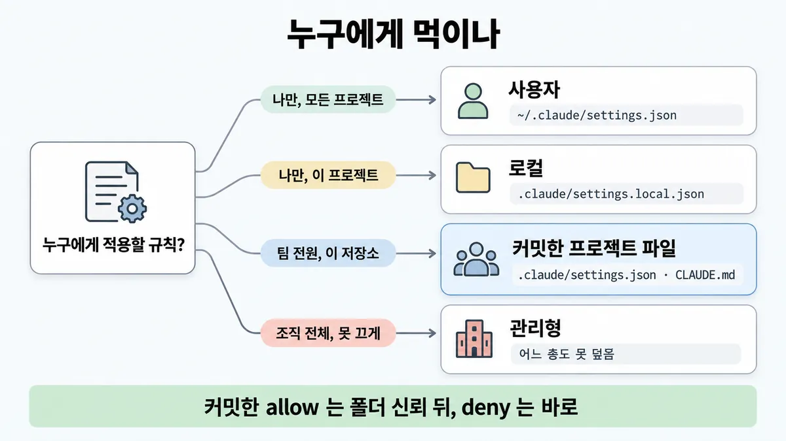
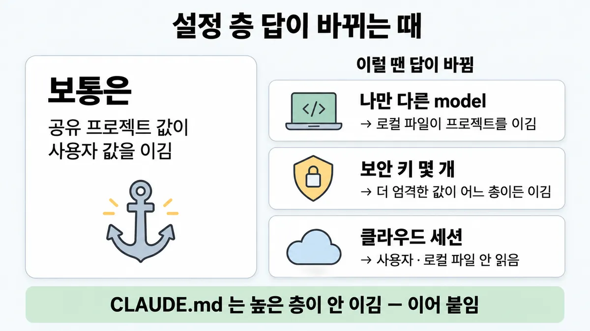

■ 팀 설정 위치
표시가 없는 문장은 공식 문서에서 확인한 내용이에요. 다른 표시는 읽는 법
왜 배우나 — 시험이 요구하는 것
시험 목표 7.1 팀 도구·환경 설정 · D7 개발팀 7%Configure Claude tools and environments for teams (e.g., Claude Code)
이 개념으로 푸는 판단 (할 수 있어야 하는 것)
- 7.1① 팀 규칙을 모두의 모든 세션에 똑같이 싣으려면? — 개인 설정 vs 저장소에 커밋한 프로젝트 설정 vs 조직 관리형 설정
- 7.1② '반드시' 돌아야 하는 검사, 어디에 거나? — 지시(CLAUDE.md) vs 훅, 그리고 어느 훅 이벤트
- 7.1③ 에이전트에 줄 권한, 어디까지? — 행동을 allow/ask/deny 로 나눈 공유 설정 + MCP 자격증명 최소 권한
한눈에
누구에게 적용할지는 어느 파일에 적느냐로 정해진다
- 팀 규칙 : 저장소에 커밋한 프로젝트 파일에 적는다
- 내 취향 : 사용자·로컬 파일에 적는다
- 조직이 못 끄게 할 것 : 관리형(managed)에 적는다
설정(settings.json)과 지시(CLAUDE.md)는 합쳐지는 방식이 다르다. 설정 값은 높은 층이 이긴다. CLAUDE.md 는 덮지 않고 이어 붙인다
비유 개인 dotfiles(~/.bashrc)와 저장소에 커밋한 .editorconfig·CI 설정과 AWS 조직 SCP 의 차이다. SCP 는 아래 계정이 풀지 못한다


ELI5
공지를 어디에 붙이느냐가 누가 보느냐를 정해요.
- 내 수첩에 적으면 나만 봐요.
- 팀 게시판에 붙이면 팀 모두가 봐요.
- 회사 정문 규정은 아무도 떼지 못해요.
- 같은 칸에 두 공지가 부딪히면 윗선 공지가 이겨요.
개념 설명
원리
파일 위치가 적용 대상을 정한다
- 설정과 지시는 내용이 아니라 어느 파일에 있나로 누구에게 적용되는지가 정해진다.
- 팀에 가는 통로는 저장소 하나다. 그래서 커밋한 프로젝트 파일만 클론한 사람에게 간다. 사용자 파일(
~/.claude/…)은 내 기계 밖으로 나가지 않는다. - 조직은 저장소 밖에서 관리형(managed)으로 내려보낸다. 그래서 개인·프로젝트 파일이 덮지 못한다.
두 시스템은 합치는 법이 다르다
- settings.json : 같은 키면 높은 층 하나가 이긴다(관리형 > 명령줄 > 로컬 > 공유 프로젝트 > 사용자). 목록 키는 층마다 합친다.
- CLAUDE.md : 이기고 지는 것이 없다. 다 이어 붙여 모델에게 보여 준다. 그래서 충돌하면 모델이 아무거나 고를 수 있다. 그리고 애초에 강제가 아니다(◆ CLAUDE.md(지시) vs 훅(강제)).
커밋해도 바로 안 먹는 까닭
- 능력을 주는 키(
permissions.allow·additionalDirectories·대부분env)는 남이 커밋한 파일이 내 기계에 권한을 여는 것이다. 그래서 팀원마다 폴더를 신뢰해야 켜진다. - 제한만 하는 키(
deny·ask)는 위험이 없어 바로 적용된다. - 일부 키는 저장소 파일에서는 아예 무시된다(예
defaultMode의auto·bypassPermissions). 저장소가 내 세션의 안전장치를 끄지 못하게 하기 위해서다.
핵심 질문은 두 개다
- 이 규칙을 누가 받아야 하나? 나인가, 팀인가, 조직인가?
- 받는 사람이 끌 수 있어도 되나?
규칙과 판단


갈림길
①②④ 누구에게 먹이나 [7.1①]
사용자
~/.claude/settings.json · ~/.claude/CLAUDE.md 에 적는다
로컬
.claude/settings.local.json · ./CLAUDE.local.md 에 적는다. 이 파일들은 git 에서 빠진다
커밋한 프로젝트 파일
.claude/settings.json · ./CLAUDE.md · .mcp.json · .claude/skills/ 를 커밋한다
관리형
관리형 값은 어느 층도 덮지 못한다. 관리형 CLAUDE.md 는 개인 설정으로 빼지 못한다
③ 같은 걸 여러 곳에 [7.1①]
높은 층이 이긴다
순서는 관리형 > 명령줄 > 로컬 > 공유 프로젝트 > 사용자 다
합친다
덮지 않고 합친다. 권한끼리 부딪히는 것은 ■ 에이전트 권한 에 있다
이어 붙인다
충돌하면 Claude 가 아무거나 하나 고를 수 있다
⑤⑥ 커밋했는데 안 먹을 때 [7.1①]
폴더 신뢰 후 적용된다
팀원마다 폴더를 신뢰(workspace trust)한 뒤에 적용된다. deny·ask 는 바로 적용된다
저장소 파일에선 안 먹는다
사용자·관리형 설정이나 --permission-mode 로 정한다
덮지 못한다
/status 로 출처를 확인한다. 그다음 관리자에게 문의한다
규칙 원문 ①②③④⑤⑥ (갈림길로 그린 규칙)
-
설정 4범위 [7.1①]
범위 파일 누구 쓰는 곳 사용자 ~/. claude/ settings. json 나, 이 기계 모든 프로젝트 테마·기본 모델·내 권한 공유 프로젝트 .claude/settings. json 커밋하면 클론한 모두 팀 권한·훅·플러그인·필요한 env 로컬 .claude/settings. local. json 나, 이 프로젝트만 (Claude Code 가 만들면 git 에서 빠진다) 개인 예외·공유 전 시험 관리형 managed-등settings. json 조직이 배포한 모두 보안 정책·규정 -
CLAUDE.md 4층 : 층은 아래와 같다
- 관리형 : Linux·WSL 에서는
/etc/claude-code/CLAUDE.md다. 개인 설정으로 빼지 못한다 - 사용자 :
~/.claude/CLAUDE.md다 - 프로젝트 :
./CLAUDE.md또는./.claude/CLAUDE.md다. 소스 컨트롤로 팀에 간다 - 로컬 :
./CLAUDE.local.md다. 나만 쓰고 .gitignore 에 넣는다
덮어쓰기가 아니다. 루트에서 작업 디렉토리 쪽으로 이어 붙인다(가까운 것이 마지막에 읽힌다). 사용자 규칙과 프로젝트 규칙은 서로 이기지 못한다. 충돌하면 Claude 가 아무거나 하나 고를 수 있다. 그러니 둘을 맞춰 둔다
@pathimport 는 정리용이다. 시작할 때 다 로드되므로 컨텍스트는 줄지 않는다 [7.1①] - 관리형 : Linux·WSL 에서는
-
우선순위(같은 키) : 순서는 관리형 > 명령줄 인자(
--settings등, 한 세션) > 로컬 > 공유 프로젝트 > 사용자 다. 관리형 값은 어느 층도 덮지 못한다. 명령줄도 덮지 못한다. 목록 키(permissions.allow등)는 덮지 않고 합친다 [7.1①]그래서 팀 파일이 내 사용자 값을 이긴다. 나만 바꾸려면 로컬 파일에 적는다(커밋할 필요가 없다)
-
팀에 같이 싣는 것 : 아래 파일을 커밋한다 [7.1①] [7.1③]
.claude/settings.json(권한·훅·플러그인)./CLAUDE.md.mcp.json(공유 MCP).claude/skills/<이름>/SKILL.md
MCP 범위는 ■ 에이전트 권한 에 있다
-
커밋했는데 팀원에게 안 먹을 때 [7.1①]
- 저장소 파일에서는 안 먹는 키가 있다. 예는
permissions.defaultMode의auto·bypassPermissions다. 이 값은 사용자·관리형 설정이나--permission-mode로 정한다 - 폴더 신뢰 후 적용되는 키가 있다.
permissions.allow·additionalDirectories·대부분의env는 팀원마다 폴더를 신뢰(workspace trust)한 뒤에 적용된다.deny·ask는 제한만 하므로 바로 적용된다 - 관리형이 같은 키를 정했으면 덮지 못한다.
/status로 출처를 확인하고 관리자에게 문의한다
- 저장소 파일에서는 안 먹는 키가 있다. 예는
-
조직 강제 : 조직이 강제하려면 관리형을 쓴다 [7.1①] [7.1②]
- 기술 강제(
permissions.deny·sandbox.enabled·env·로그인 제한) : 관리형 settings 에 둔다 - 행동 지침(코드 스타일·데이터 취급 알림) : 관리형 CLAUDE.md 에 둔다
지시와 강제의 차이는 ◆ CLAUDE.md(지시) vs 훅(강제) 에 있다
로컬에서 "Yes, and don't ask again" 으로 생긴 allow 는 프로젝트·관리형의 ask 를 이기지 못한다
예외도 있다. 보안 키 몇 개는 더 엄격한 값이 아래 층에서 와도 적용된다(예
disableClaudeAiConnectors: true) - 기술 강제(
더 깊이 : 판단 규칙 · 상황 변수 (설명)
판단 규칙
| 조건 | 답 | 근거 |
|---|---|---|
| 팀 전원이 같은 권한·훅·플러그인을 써야 한다 | .claude/ 을 커밋한다 | settings "Commit .claude/ so everyone who clones the repository gets the same permissions, hooks, and plugins." |
| 팀 전원이 같은 지시(빌드 명령·관례)를 받아야 한다 | ./ 또는 ./ 를 커밋한다 | memory "Team members via source control" |
| 나만, 이 프로젝트에서 예외를 둔다 | .claude/ · ./ 에 적는다 | settings · memory |
| 나만, 모든 프로젝트에 적용한다 | ~/ · ~/ 에 적는다 | settings · memory |
| 조직 전체에 끌 수 없게 적용한다 | 관리형 settings(기술 강제)와 관리형 CLAUDE.md(행동 지침)에 적는다 | settings · memory |
| 같은 키가 여러 층에 있다 | 가장 높은 층 값이 이긴다 | settings |
| 커밋한 allow 가 팀원에게 안 먹는다 | 아직 폴더 신뢰 전이다. 각자 신뢰하면 적용된다 | settings · permissions |
| 팀 스킬을 공유한다 | .claude/ 를 커밋한다 | skills |
상황 변수
| 변수 | 값 | 답 쪽 | 근거 |
|---|---|---|---|
| 받는 사람 | 나 / 팀 / 조직 | 사용자·로컬 / 프로젝트 커밋 / 관리형 | 판단 규칙 1~5 |
| 끌 수 있어도 되나 | 안 된다 | 관리형 | settings |
| 키 종류 | 값 하나 | 높은 층이 이긴다 | settings |
| 키 종류 | 목록(permissions. 등) | 합친다 | settings |
| 키 종류 | 권한 규칙끼리 | deny 가 층과 무관하게 이긴다. 자세한 것은 ■ 에이전트 권한 에 있다 | permissions |
| 규칙 성격 | 막아야 한다 | settings permissions. 나 훅 | memory |
| 규칙 성격 | 행동 지침이다 | CLAUDE.md | memory |
| 실행 곳 | 클라우드 세션 | 사용자·로컬 파일은 읽지 않는다. 커밋한 프로젝트 파일과 server-managed 만 읽는다 | settings |
| 실행 곳 | claude -p·SDK | 신뢰 대화창이 없다. 그래서 커밋한 allow 는 먹지 않고 경고가 나온다 | permissions |
연습 문제
개발자 12명이 쓰는 저장소에서 npm run * 을 묻지 않게 하려고 .claude/settings.json 의 permissions.allow 에permissions.allow 규칙을 커밋했다. 그런데 어제 클론한새 클론 3명만 계속 확인창을 받는다. 한 명은 "파일이 틀렸으니 각자 사용자 설정에 다시 적자" 고 한다. 원인은 무엇인가?
시험 대비
함정
- "각자 개인 메모리(
~/.claude/CLAUDE.md)나 프롬프트에 팀 규칙을 추가한다" 는 함정이다. 그 규칙은 내 기계에만 있다. 팀 규칙은 프로젝트 파일로 커밋한다 - "더 큰 모델이면 팀 규칙을 알아서 지킨다" 는 함정이다. 모델은 안 실린 규칙을 모른다. 어디에 적었나의 문제다 업계 일반
- "
@import로 쪼개면 컨텍스트가 준다" 는 함정이다. 시작할 때 다 로드된다 - "사용자 설정이 프로젝트 설정을 이긴다" 는 함정이다. 반대다. 공유 프로젝트 > 사용자 순이다
- "
--settings로 관리형 값을 덮는다" 는 함정이다. 관리형은 명령줄로도 덮지 못한다 - "조직 보안 규칙을 관리형 CLAUDE.md 에만 적는다" 는 함정이다. 그것은 행동 지침일 뿐이다. 막으려면 관리형 settings
permissions.deny를 쓴다 - "팀
.claude/settings.json에defaultMode: bypassPermissions를 커밋한다" 는 함정이다. 저장소 파일에서는 이 값이 먹지 않는다 - "위키나 README 에 적어 두면 다 본다" 는 함정이다. Claude 가 읽는 파일이 아니다 업계 일반
신호
"Commit .claude/settings.json so everyone who clones the repository gets the same permissions, hooks, and plugins."
"When the same key appears in more than one place, Claude Code uses the value from the highest level that sets it."
"Nothing you set overrides them: a key you pass with --settings doesn’t override the same managed key"
"All discovered files are concatenated into context rather than overriding each other."
"This file cannot be excluded by individual settings." (관리형 CLAUDE.md)
"Use settings for technical enforcement and CLAUDE.md for behavioral guidance"


더 깊이 : 뒤집히는 때 · 오답 재료 (설명)
뒤집히는 때
1. 개인 값이 팀 값을 이기는 때
- 조건 : 팀
.claude/settings.json이model을 정했다. 나만 다른 모델을 쓰고 싶다. - 판단 : 로컬(
.claude/settings.local.json)이 공유 프로젝트보다 위다. 그래서 로컬에 적으면 내 세션만 바뀐다. "팀 파일이 항상 이긴다" 는 사용자 파일 기준일 때만 맞다. - 단 권한 규칙은 뒤집히지 않는다. 로컬 allow 는 프로젝트 ask 를 이기지 못한다. 어느 층이든 deny 가 이긴다.
- 근거 : settings · permissions
2. 커밋했는데 새로 온 팀원에게 안 먹는 때
- 조건 : 개발자 12명이 쓰는 저장소에
permissions.allow를 커밋했다. 어제 클론한 3명은 계속 확인창을 받는다. - 판단 : 설정이 틀린 것이 아니다. 아직 폴더 신뢰 전이다. 그 3명이 폴더를 신뢰하면 적용된다. 같은 파일의
deny는 이미 적용되고 있다. - 같은 부류 : 커밋한
enableAllProjectMcpServers도 미신뢰 폴더에서는 무시된다. 자세한 것은 ■ 에이전트 권한 · 규칙 ⑥ 에 있다. - 근거 : settings · permissions · mcp
3. 클라우드 세션에서 개인 설정이 사라지는 때
- 조건 : 권한 규칙을
~/.claude/settings.json에만 두고 claude.ai/code 클라우드 세션을 띄운다. - 판단 : 클라우드 세션은 새 클론에서 돈다. 그래서 사용자·로컬 파일을 읽지 않는다. 관리형도 기기에 깐 파일과 MDM 은 닿지 않고 server-managed 만 닿는다. 그래서 팀 규칙은 커밋하고, 조직 규칙은 server-managed 로 둔다.
- 여러 저장소를 여는 클라우드 세션은 각 저장소의
.claude/settings.json에서enabledPlugins·extraKnownMarketplaces만 읽는다. 권한과 훅은 읽지 않는다. - 근거 : settings
4. 관리형인데 아래 층 값이 이기는 때
- 조건 : 관리형이
disableClaudeAiConnectors: false다. 프로젝트는true다. - 판단 : 보안 키 몇 개는 "더 엄격한 값"이 어느 층에서 와도 적용된다. 그래서
true가 이긴다. "관리형이 항상 이긴다"의 예외다. - 등급 : (예외 키 목록은 자주 바뀐다. 조회일을 확인한다)
- 근거 : settings
5. 사용자 CLAUDE.md 와 프로젝트 CLAUDE.md 가 부딪히는 때
- 조건 : 내
~/.claude/rules/는 "탭 들여쓰기" 다. 프로젝트 규칙은 "공백 2칸" 이다. - 판단 : settings 처럼 높은 층이 이기는 것이 아니다. 프로젝트 규칙이 뒤에 실리지만 서로 덮지 못한다. 그래서 Claude 가 어느 쪽이든 따를 수 있다. 처방은 둘을 맞추는 것이다. 반드시 지켜야 하면 지시가 아니라 훅을 쓴다.
- 근거 : memory
오답 재료
| 오답 | 왜 끌리나 | 왜 틀리나 | 등급 | 근거 |
|---|---|---|---|---|
"각자 ~/ 에 팀 규칙 추가" | 각자 넣으면 다 받는 것 같다 | 사람마다 문구가 달라지고 새 팀원에게는 없다. 사용자 파일은 "Just you" 다 | memory | |
| "더 큰 모델이면 팀 규칙을 알아서 지킨다" | 똑똑하면 맥락을 알 것 같다 | 안 실린 규칙은 모델이 모른다. 위치 문제다 | 업계 일반 | — |
"@import 로 쪼개 컨텍스트 절약" | 파일이 작아 보인다 | 시작할 때 다 펼쳐 로드된다 | memory | |
| "사용자 설정이 프로젝트를 이긴다" | 내 설정이 제일 가까워 보인다 | 공유 프로젝트 > 사용자 순이다 | settings | |
"-- 로 관리형을 덮는다" | 명령줄이 로컬 파일은 덮는다 | 관리형은 명령줄로도 덮지 못한다 | settings | |
| "조직 보안 금지를 관리형 CLAUDE.md 에" | 조직 전체에 적용되는 파일이기 때문이다 | 행동 지침일 뿐 강제가 아니다. 막는 것은 관리형 permissions. 다 | memory | |
"팀 파일에 defaultMode: bypassPermissions 커밋해 확인창 없애기" | 한 번에 다 편해진다 | 저장소 파일에서는 먹지 않는다 | settings | |
"settings. 에 팀 권한을 넣고 커밋" | 파일이 이미 있다 | 로컬 파일은 git 밖에 두는 것이 원칙이다. 추적되면 신뢰 단계를 탄다 | settings | |
| "위키에 적어 두면 다들 본다" | 사람에게는 통한다 | Claude 가 읽는 파일이 아니다 | 업계 일반 | — |
참고
더 깊이 : CCA-F · 출처 · 상태 · 미해결 (참고)
CCA-F
겹침 (3.1 CLAUDE.md 4층 · "새 팀원만 규칙을 못 받는다" 는 사용자 층에 적은 탓이고, 프로젝트 층으로 커밋해 푼다). 여기서는 settings.json 범위·우선순위·폴더 신뢰 조건·관리형 강제까지 넓힌다. 여러 명 팀과 조직 정책을 어디에 싣나를 운영 설계로 묻는다
출처
- 가이드 목표 7.1 공식 시험 가이드 v1.0
- code.claude.com settings
- memory
- skills
- mcp (2026-09-28 조회)
- CCA-F 노트 3.1 (개인 학습 노트)
상태
- 업계 일반 2줄(함정)
미해결
- 목록 7.1① "Part 24 Q7.1 함정 · 샘플 1 D 해설" 에 "더 큰 모델이면 팀 규칙을 알아서" 가 있다. 샘플 1 D 해설("model size (D) is unrelated to authorization scope")은 권한 범위 이야기다. 그래서 팀 규칙 배포와는 다르다. 공식 문장이 없어 업계 일반으로 둔다.
- 목록은 "커밋하면 버전 관리·PR 리뷰를 탄다" 고 적는다. "source control"·"version control" 은 원문에서 확인했다(memory). "PR 리뷰" 는 settings·memory 원문에서 못 찾았다(파일 en-claude-code-settings.md·en-claude-code-memory.md, 검색어 review·pull request). 그래서 카드에는 넣지 않는다.
- 관리형 전달 방식(server-managed·MDM·파일)과 관리형 안의 우선순위는 managed-settings 문서 소관이다. 이번에 받지 않았다(settings 원문의 링크만 봤다).
- 버전 조건 :
bypassPermissions가 저장소 파일에서 무효가 된 것은 v2.1.257 부터다(settings). 이것이 시험(2026-07) 뒤인지는 Claude Code 변경 기록을 받지 않아 확인하지 못했다. 시험은 옛 동작으로 물을 수도 있다(추론).